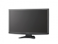

MDL271CV独具硬件校色与DiamondColor Match！色彩管理软件、GIGA Clear优化引擎、新•超解像技术等三菱自创的业界尖端技术，实现了前所未有的3.5ms超速灰阶响应时间与低至1/10帧的画面输出延迟，将绝佳影音娱乐体验与专业色彩管理完美结合，充分满足了入门级图像处理工作者、摄影爱好者、游戏玩家与普通用户的多重使用需求。27寸的大屏幕显示器还可以直接连接智能手机，显示手机画面，展现了人性化的便捷设计。